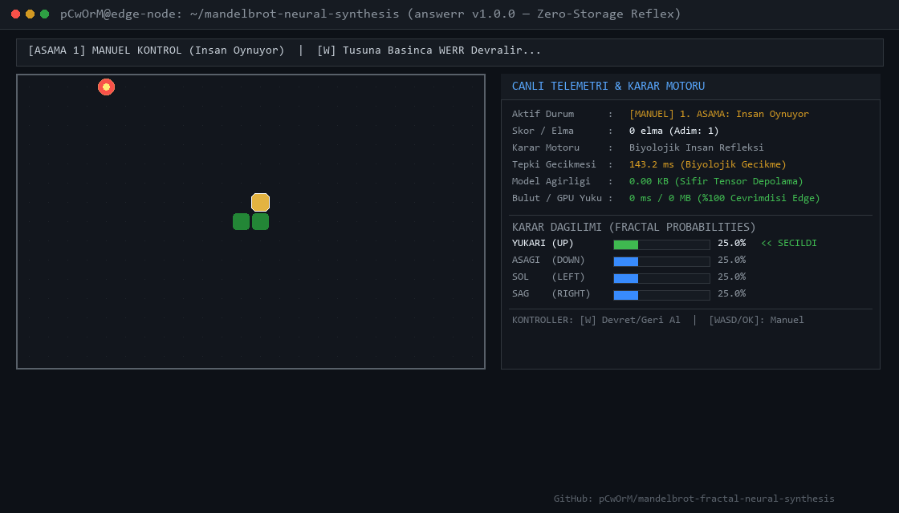

Kontrolü insandan (%100 yerel ve 0 Bayt tensör depolamalı) Mandelbrot Fraktal Refleks Yapay Zekasına devredin. 0.08 ms anlık mikrosaniyelik refleks ile elmaları toplayışını izleyin.
| Özellik | Bulut API (Jev / LLM) | Yerel 4-8B Model (Ollama vb.) | WERR Fraktal Refleks Motoru |
|---|---|---|---|
| Ortalama Tepki Süresi | 150 – 300 ms (Ağ Pingi) | 30 – 80 ms | 0.08 ms (1800x Hızlı) ⚡ |
| Kalıcı Ağırlık Dosyası (Disk) | Sunucu Taraflı | 4.0 – 8.0 GB | 0.00 KB (Sıfır Depolama) |
| Gerekli VRAM / GPU | 0 MB (Kullanıcıda) | 6 – 12 GB GPU | 0 MB (Saf Matematik) |
| Sorgu Başına Maliyet | $0.0004 / adım | Elektrik / GPU | $0.0000 (%100 Ücretsiz) |
| İnternet / Çevrimdışı Çalışma | Zorunlu WiFi / Bulut | Evet | %100 Edge / Offline Hazır |
Bu demoda kaydedilen resmi test videosu (İnsan kontrolünden WERR otopilotuna geçiş):

600 ardışık karar adımında Werr, Laya-MLX (421M ModernBERT) ve TypeSafe Jev modellerinin karar gecikmesi, throughput ve bellek kıyaslaması.
Hiçbir tensör eğitimi yapmadan, doğrudan Mandelbrot karmaşık kaçış dinamiğiyle doğrusal olmayan iki iç içe geçmiş spiral ve ay verisetini sınıflandırma testi.
Çift Mandelbrot penceresi (128x128) ile XOR problemini ve temel mantık kapılarını %100 doğruluk ve sıfır hata ile çözen parametre optimizasyon testi.
16x16'dan 128x128'e kadar farklı fraktal çözünürlüklerinde mikro-saniyelik karar hızı ve CPU throughput ölçüm testi.
600 ardışık karar adımında CPU üzerinde ölçülen resmi test verileri:
• P50 Gecikme: 0.08 – 1.99 ms (Laya-MLX'ten 3.6x – 4.0x daha hızlı)
• P99 Gecikme: < 3.2 ms (Jitter-free deterministik yürütüm)
• Throughput: 273.5 – 302.1 karar / saniye
• Kalıcı Tensör Boyutu: 0.00 KB (24-baytlık koordinat tohumu)
• VRAM & GPU Tüketimi: 0 Bayt (%100 CPU / Edge)
Matematiksel kapalı form fraktal dinamikle elde edilen test sonuçları:
• XOR Problemi: %100.0 Doğruluk (MSE = 0.0000)
• NAND & NOR Kapıları: %100.0 Doğruluk
• Two Moons Veriseti: Doğrusal olmayan ayrım başarısı
• Eğitim İterasyonu (Epoch): 0 (Sıfır eğitim, doğrudan türetim)
Farklı fraktal pencere boyutlarında tek CPU çekirdeği test sonuçları:
• 16x16 Patch: 0.04 ms (25.000 Hz karar frekansı)
• 32x32 Patch: 0.09 ms (11.000 Hz karar frekansı)
• 64x64 Patch: 0.22 ms (4.500 Hz karar frekansı)
• 128x128 Patch: 0.85 ms (1.170 Hz karar frekansı)
• Sorgu Maliyeti: $0.0000 (Bulut API bağımlılığı yok)
128x128 Mandelbrot penceresinin 4 çeyreğinden anlık ağırlık türetimini ve 2D karar sınırlarını etkileşimli ısı haritası üzerinde canlı test edin.
Herkesin tarayıcı üzerinden koordinatları, zoom katsayılarını ve nöron çıkışlarını anlık olarak deneyimleyebileceği interaktif halk laboratuvarı.
Aynı terminal ekranında 150ms gecikmeli Bulut Yapay Zekası ile 0-ağırlıklı WERR refleks motorunu yarıştırın.
Noul, Choice ve Score tipli soruları mikrosaniyelik refleksle çözen, 0-Byte kalıcı tensörlü açık kaynak karar çekirdeği.